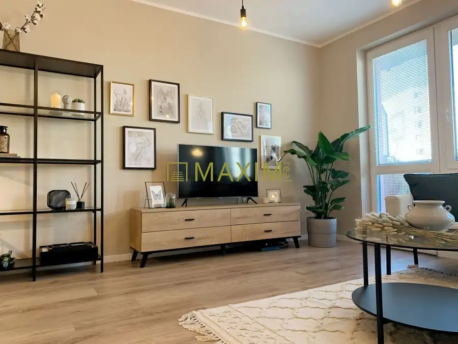
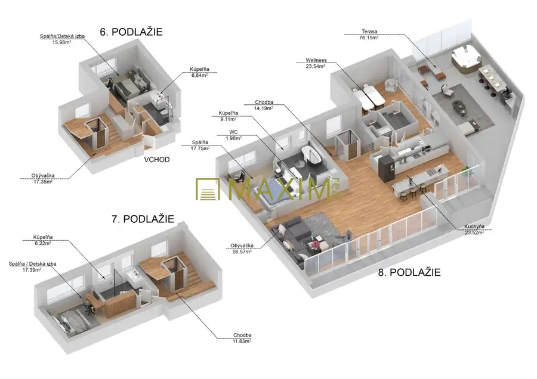

Aktuálna ponuka
Nehnuteľnosti, ktoré ponúkam
6 nehnuteľností na predaj a prenájom. Vyberte typ, alebo napíšte lokalitu.
6 z 6 ponúk
 BytNové8
333 000 €Vo výstavbe – V projekte Downtown Yards 2 izbový byt s garáž. státím
Ružinov, Bratislava
2-izbový52.22 m²5. podlažie
Ponúkame na predaj 2 izbový byt v projekte DownTown Yards s výnimočným londýnskym charakterom a architektúrou s medzinárodným štandardom.Byt je…
BytNové8
333 000 €Vo výstavbe – V projekte Downtown Yards 2 izbový byt s garáž. státím
Ružinov, Bratislava
2-izbový52.22 m²5. podlažie
Ponúkame na predaj 2 izbový byt v projekte DownTown Yards s výnimočným londýnskym charakterom a architektúrou s medzinárodným štandardom.Byt je…
 PozemokNové6
469 500 €Stavebný pozemok pre RD v obci Most pri Bratislave na ulici Športová
Most pri Bratislave
1865 m²
Ponúkame na predaj pozemok o výmere 1865 m2 v obci Most pri Bratislave na Športovej ulici. Približná šírka pozemku je 11,6 m2 x dĺžka 160,7 m2. Na…
PozemokNové6
469 500 €Stavebný pozemok pre RD v obci Most pri Bratislave na ulici Športová
Most pri Bratislave
1865 m²
Ponúkame na predaj pozemok o výmere 1865 m2 v obci Most pri Bratislave na Športovej ulici. Približná šírka pozemku je 11,6 m2 x dĺžka 160,7 m2. Na…
 Byt10
317 000 €S garážovým státím a záhradkou 3 izbový byt na ul. Široká v Bratislave
Vajnory, Bratislava
3-izbový69 m²1. podlažie
Ponúkame na predaj 3 izbový byt na ulici Široká v Bratislave – Vajnory.Nachádza sa na 1. poschodí v 3. poschodovom bytovom dome s vlastnou kotolňou,…
Byt10
317 000 €S garážovým státím a záhradkou 3 izbový byt na ul. Široká v Bratislave
Vajnory, Bratislava
3-izbový69 m²1. podlažie
Ponúkame na predaj 3 izbový byt na ulici Široká v Bratislave – Vajnory.Nachádza sa na 1. poschodí v 3. poschodovom bytovom dome s vlastnou kotolňou,…
 Pozemok6
295 000 €Predaj stavebného pozemku pre RD na ulici Vavrinecká v Limbachu
Limbach
759.5 m²
Ponúkame na predaj stavebný pozemok na výstavbu RD v Limbachu na Vavrineckej ulici na začiatku obce mimo hlavnej cesty.Pozemok ma ideálne rozmery na…
Pozemok6
295 000 €Predaj stavebného pozemku pre RD na ulici Vavrinecká v Limbachu
Limbach
759.5 m²
Ponúkame na predaj stavebný pozemok na výstavbu RD v Limbachu na Vavrineckej ulici na začiatku obce mimo hlavnej cesty.Pozemok ma ideálne rozmery na…

Byt10 262 000 €TOP Zariadený 2 izbový byt na ul. Vyšehradská v Bratislave Petržalka, Bratislava 2-izbový54.06 m²2. podlažie Ponúkame na predaj 2 izbový byt na ulici Vyšehradská v Bratislave. Nachádza sa na 2. poschodí v 11. poschodovom bytovom dome skolaudovanom v roku…
BytNové10 Cena dohodouTOP Mezonet (holobyt) s terasou na ulici Páričkova v Bratislave – Nivy Ružinov, Bratislava 221.6 m²6. podlažie Ponúkame na predaj 5 izbový mezonet s vlastným výťahom v nadstavbe na ulici Páričkova v Bratislave – Nivy v lokalite 500 bytov.Nachádza sa na 6.…Tomuto výberu zatiaľ nezodpovedá žiadna ponuka. Napíšte mi, čo hľadáte.